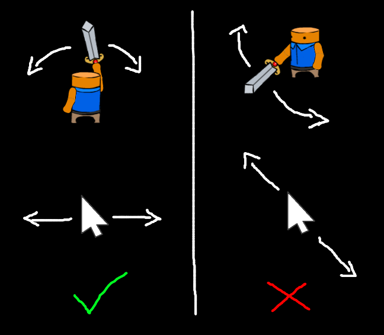
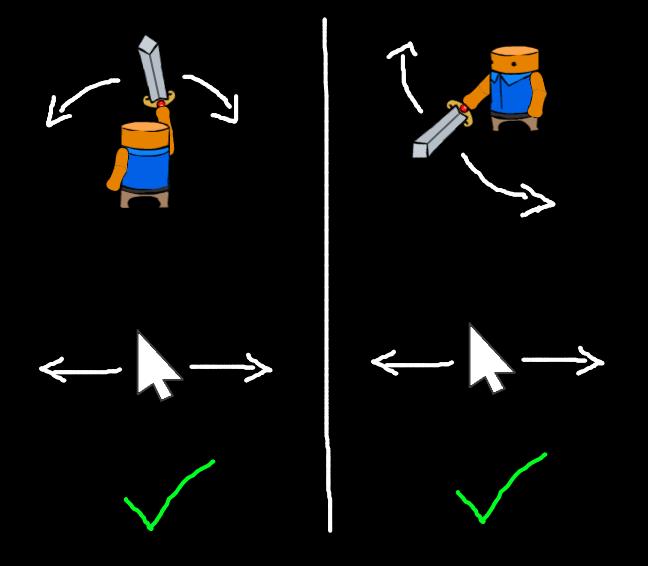
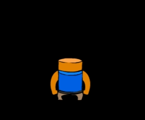
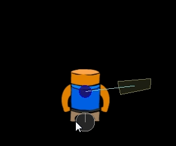
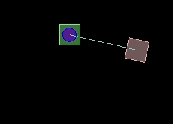

Jun 22, 2014Sword Controls UpdateThis week I spent a good amount of time changing the sword controls. Hopefully they are now something that the team is happy with and won't require any more modifications (except perhaps a little tweaking.) Problem 1:To swing the sword you literally swing your mouse in the direction of the sword swing. This feels great when swinging from left to right but is super awkward at some of the other angles. Solution 1: Always swing horizontally now matter what direction you are facing. This feels really good and I think it's a big improvement over how we had it before. Time and user testing will tell if this is a good direction to take. It can be a little hard when you are walking down as the swing happens in the opposite direction from your mouse movement but I think people will figure it out. Problem 2:The sword always spawns in the middle and so you can only get in half the range of swing. Solution 2: Spawn the sword at the edges. 
I added a way of spawning the sword on the extremes depending on which way the mouse is moving when you start using the sword. So you start moving the mouse from left to right for a clockwise swing before you click to bring your sword out then the sword will spawn at the left extreme so that it can swing through the full range of motion. I'm not sure how best to teach the player to correctly use this ability but I think once understood it is easy to execute and gives you the desired control. Problem 3:Setting the rotation of the sword physics body wasn't working (in the Farseer Physics engine). Sometimes it would work and sometimes it would go to the wrong position or not move at all. This gif does not demonstrate the problem but it does show you the underlying physics objects. I realize that the physics body doesn't perfectly line up with the sprite but that's a problem for future me. Solution 3: The sword is made up of a sword body and an origin body (which is what the sword rotates around), which are connected with a joint. I ended up removing the joint, repositioning the objects where I wanted, and then recreating the joint. While I would be surprised if there wasn't an easier way of doing this I was having trouble figuring it out and this works just fine. I couldn't think of a good image to put here so I added is a bonus gif of the test app I made to solve the problem. Sometimes I like to recreate an issue in a new clean project to minimize the code that could be causing the issue. I created the initial sword physics stuff around Christmas and it's been nice to squeeze in another pass to clean it up and get it feeling better. We have a demo due out next week so now I need to get item stats showing up so you can can make an educated decision about which loot to pickup! |
There and back again, an OOP tale Basic C# Auto Updater Pillars of Eternity is broken. A Silly Mistake Tweaking The Farseer Engine London Anime and Gaming Convention Sword Controls Update Texture Bleeding MoonBus Post Mortem Optimizing drawing with Sprite Sheets (Android) Space Crazy Prototype Android resource scaler my history with programming |
contact@hernblog.com
Follow @IanMakesGames